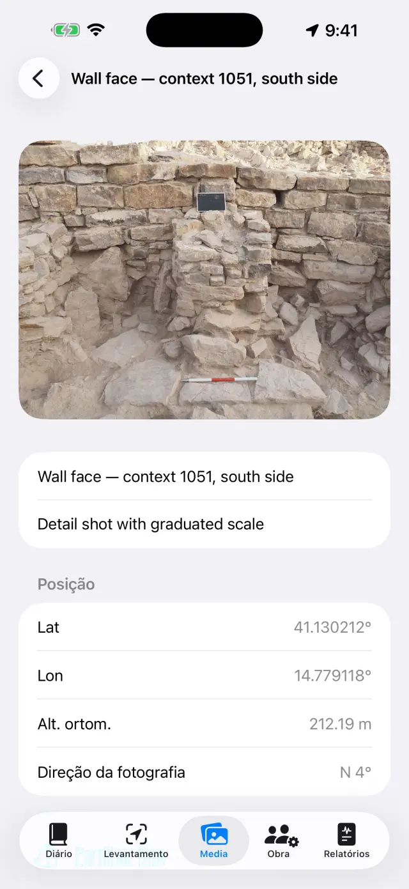
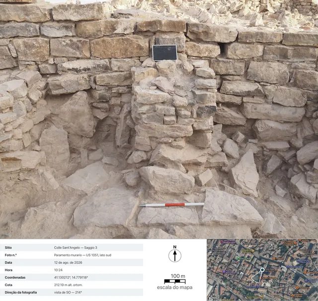

O diário de escavação digital para iPhone e iPad. 100% offline: os seus dados permanecem no dispositivo.
Em poucas palavras
Há uma única ideia por trás de tudo: cada dia de escavação é uma
página que se preenche sozinha. Regista-se cada coisa onde acontece —
um ponto GNSS no Levantamento, uma foto nos Media, as horas na Obra — e a
página do dia no Diário reúne tudo automaticamente. No final da
semana ou da escavação, os relatórios geram-se sozinhos a partir das páginas.
Um dia típico
ManhãAbra a página do dia, anote o tempo e o diário (ou diga-o com Ditar)
EquipaNa Obra, registe quem está presente e as respetivas horas
LevantamentoCapture pontos GNSS; verifique um marco geodésico primeiro se usar RTK
FotosFotografe a partir dos Media: as coordenadas anexam-se sozinhas
DesenhosDecalque o corte ou a planta sobre uma foto (papel vegetal digital)
TardeNo separador Relatórios, gere o relatório diário: um PDF pronto a enviar
Primeiros passos
No primeiro arranque, encontrará já um sítio de exemplo. Para criar um
seu, toque no nome do sítio no topo (ícone 🗺) →
Novo sítio… e dê-lhe um nome (por ex., «Colle Sant'Angelo — Sondagem 3»).
O nome do sítio ativo está sempre visível no topo: todos os separadores
mostram os dados desse sítio. Para mudar de sítio, toque novamente no nome:
a lista fica sob o título «Os seus sítios», e com Renomear sítio…
corrige um nome sem perder nada.
Conceda as permissões quando forem pedidas: localização (para os
pontos), câmara (para as fotos), microfone (para o ditado),
Bluetooth (apenas se usar um recetor externo).
Os cinco separadores
📓 Diário
Toque num dia para abrir a sua página: diário, tempo, equipa, pontos,
fotos e desenhos desse dia já lá estão.
Escreva o diário ou toque em Ditar e fale: a transcrição é
feita no dispositivo e funciona mesmo sem rede.
O tempo escreve-se à mão (por ex., «Céu limpo, 28 °C, vento fraco») ou
obtém-se com Obter, que pede as condições do momento ao serviço
meteorológico norueguês. É necessária rede e só funciona no dia de hoje: o
tempo de ontem já não pode ser recuperado. Um segundo toque à tarde acrescenta
uma nova medição. O que escrever à mão prevalece sempre.
Ao obter, só a posição da zona arredondada a cerca de 11 metros sai do
dispositivo, e nos relatórios a linha aparece no idioma do relatório.
A lista dos diasA página de um dia
📍 Levantamento
O painel no topo mostra a posição em tempo real: coordenadas, altitudes,
precisão e tipo de fix (GPS / RTK Float / RTK Fix).
Se usar um bastão, defina a Altura da antena (m): a altitude do
ponto é reduzida ao solo automaticamente.
Toque em Capturar ponto. O nome é progressivo (P001, P002…),
mas pode introduzir um à sua escolha (por ex., «UE 102 — fundo da fossa») e
acrescentar uma nota.
Alterne entre Lista e Mapa para ver os pontos no
terreno; a partir do mapa pode ativar o cadastro ou outro serviço WMS.
Os marcos geodésicos (🏁) vivem na sua própria secção: importe-os de CSV
ou crie-os, depois abra a Verificação em tempo real e acompanhe os
desvios ΔN/ΔE/ΔZ com a ponteira sobre o prego, antes de começar a levantar.
Em Cadernetas de nivelamento está a caderneta de campo do nível
ótico: estações, leituras de ré e de vante, altitudes calculadas a partir de
um marco geodésico de partida, com o controlo de fecho. Os pontos nivelados
entram no sítio com a sua altitude, tal como os pontos GNSS.
Por baixo do painel estão as Gravações NMEA: o fluxo bruto do
recetor externo PRO vai parar a ficheiros sozinho — a
gravação começa quando liga a antena e fecha-se quando a desliga, sem que tenha
de se lembrar disso. Serve para reler um dia duvidoso ou para entregar o bruto
a quem faz o pós-processamento. Os ficheiros partilham-se e apagam-se, exceto o
da gravação em curso; a lista abre-se mesmo com o recetor desligado, para que os
ficheiros de ontem continuem acessíveis.
O painel GNSS do LevantamentoPontos e marcos geodésicos no mapa
Cada ponto guarda as duas altitudes:
elipsoidal e ortométrica (alt. ortom.). Com o GPS interno do telemóvel, a
altitude ortométrica pode não estar disponível: é necessário um recetor
externo (ver abaixo).
📷 Media
Fotografe com o botão da câmara ou importe da biblioteca de fotos.
As fotos recebem um nome progressivo (F001, F002…) e são georreferenciadas
com a última posição GNSS disponível.
No momento do disparo, a aplicação regista também a direção de
observação dada pela bússola: no detalhe da foto e nos relatórios
lê-se «vista de SO — 214°», e para as fotos tiradas a prumo (planta, fundo
de uma UE) a indicação zenital com a direção do bordo superior. Se a bússola
estiver perturbada, a aplicação avisa.
Toque numa foto para lhe dar título e notas (por ex., «UE 102 vista do norte»).
Partilhar fichaPRO gera a
ficha fotográfica de documentação: a foto com, por baixo, os
dados do disparo (sítio, número, data e hora, coordenadas, altitude,
direção), uma vista de satélite com o marcador de posição e o cone de visão,
a barra de escala do mapa e a seta do norte. O mapa requer rede: sem rede, a
ficha sai na mesma, com o painel de dados alargado.
A galeria de fotos

O detalhe de uma foto: coordenadas, altitude e direção de observação

A ficha exportada: os dados do disparo, a vista de satélite com o cone de visão, a barra de escala do mapa e a seta do norte
✏️ Desenhos (em Media)
Crie uma nova prancha e escolha uma foto do sítio como fundo: é o seu
papel vegetal digital. Um desenho pode continuar ao longo de vários dias.
Também pode não a pôr, a foto: sobre o papel vegetal branco desenha-se na
mesma.
Decalque estratos, cortes e pedras com o dedo ou com a Apple Pencil.
Belisque para ampliar (até 6×, toque duplo com dois dedos para
voltar a 1×). Se a foto lhe tapar o traço, no menu da câmara escolha
Opacidade do fundo… e leve-a até onde precisar, de 5% a 100%: esbate
a foto, não o desenho. A escolha fica na prancha e vale também em PDF, DOCX,
PNG e Exportar com legenda.
Todo o resto está em Ferramentas (a chave de bocas na barra),
que é o índice dos seis modos: Caixa de texto, DecalquePRO, Escala da foto, Ponto com
altitude, Trama e Estilo da linha. Mantém-se
um só de cada vez: o visto diz qual, e enquanto estiver ligado
o dedo não desenha, comanda essa ferramenta — para voltar a desenhar, toque
novamente na entrada que tem o visto. Os três modos que trabalham sobre a
imagem (decalque, escala, ponto cotado) só aparecem se houver uma foto de
fundo.
Com a Caixa de texto coloca as etiquetas (por ex., «UE 1002»):
movem-se, redimensionam-se com o beliscão e há quatro tipos de letra à
escolha.
O DecalquePRO reconhece o contorno do
objeto que tocar (uma pedra, o limite de um estrato) e transforma-o em traço:
a cor, a espessura e o estilo da linha mudam-se sem sair do modo, e os
contornos saem lisos em vez de aos degraus. Tudo acontece no dispositivo, sem
rede.
Dentro do decalque, Decalcar tudoPRO
dá a volta sozinho a toda a foto. Na folha de arranque decide o aspeto —
Apenas contornos, ou uma trama e talvez um Véu de cor — e
prime Iniciar: a barra diz em que ponto vai, e leva algumas dezenas
de segundos. O que aparece é uma pré-visualização, não o
desenho: um toque dentro de uma forma exclui-a, outro volta a incluí-la (entre
formas sobrepostas ganha a mais pequena sob o dedo), Passagem fina
repassa apenas onde não tinha encontrado nada, e Aplicar põe no
desenho o que sobrou. Enquanto não aplicar, a prancha fica intacta.
Com a ferramenta Escala da foto (régua), toque nos dois extremos
de uma medida conhecida — um segmento da baliza — e escreva a distância real: a
foto adquire a escala, e a partir daí as exportações passam a falar em
metros.
Com Ponto com altitude, coloque na foto a cruz de um ponto GNSS
do sítio (ou um ponto introduzido manualmente): o nome, a altitude e as
coordenadas aparecem numa etiqueta arrastável com a linha de chamada. Belisque
sobre a etiqueta selecionada para a diminuir ou aumentar, quando os valores
tapam o desenho.
A Trama preenche as formas: toca-se dentro de
uma forma fechada e ela enche-se. Há as dez tramas de convenção —
Alvenaria / pedra, Tijolo, Argamassa / reboco,
Argila, Silte, Areia, Cascalho,
Carvão / cinza, Rocha natural, Madeira — e o
Véu de cor (uma cor com a sua opacidade), sozinhos ou juntos. Se uma
forma estiver dentro de outra ganha a mais pequena sob o dedo; Remover
preenchimento limpa-a. Não é precisa foto: o preenchimento trabalha sobre
as formas desenhadas, por isso funciona também no papel vegetal branco.
O Estilo da linha veste um traço já desenhado:
toca-se nele e escolhe-se entre Contínua, Tracejada,
Pontilhada e Traço-ponto, regulando a espessura.
Desenhar com este estilo faz nascer já vestidos os traços seguintes;
Remover estilo devolve a linha cheia. Não é um efeito do ecrã: os
tracinhos são segmentos verdadeiros, e continuam a sê-lo em PDF, DOCX, PNG, SVG
e DXF.
Exportar com legendaPRO: a
imagem sai com uma faixa branca por baixo — barra métrica (se a escala
existir), seta do norte para as fotos tiradas a prumo, «vista de» para as
frontais.
Exportar vetorialPRO: SVG para o
desenho, ou DXF para o SIG. Com pelo menos dois pontos
cotados com coordenadas numa foto a prumo, o DXF sai
georreferenciado em UTM e no QGIS posiciona-se sozinho no
mundo; apenas com a escala sai em metros locais; sem uma coisa nem outra, a
aplicação avisa e não produz um ficheiro sem unidades. O SVG é a exceção
quanto à opacidade: incorpora a foto original tal e qual, por isso o fundo
esbatido sai ali com toda a força.
Quando terminar, oculte a foto: fica o desenho limpo, pronto para o relatório.
O papel vegetal digital
👷 Obra
Registe as presenças do dia: nome, função e horas de cada pessoa.
Mantenha o inventário dos equipamentos e a quem estão atribuídos.
Presenças e horas
📄 Relatórios
Escolha o tipo: diário (gratuito, com marca de água),
semanal, mensal ou final
com apêndices completos PRO.
Escolha o idioma do relatório entre dezassete, independente
do idioma da aplicação: o relatório pode sair em espanhol mesmo que utilize a
aplicação em português.
Gere o PDF, ou exporte em DOCX com logótipo e fotos
PRO, CSV dos pontos, GeoJSON para o QGIS
PRO.
Com as fotos ativadas nos relatórios, pode escolher Fichas
fotográficas em vez das fotosPRO: cada foto
entra no PDF e no DOCX como uma ficha de documentação completa, com dados e
mapa, no idioma do relatório.
Geração de relatórios
Recetor GNSS externo e NTRIP
Com um recetor externo (antena centimétrica), a aplicação atinge a
precisão RTK. O GPS interno permanece sempre disponível como alternativa.
Ligue o recetor e ative o Bluetooth do telemóvel.
No Levantamento, escolha a origem da posição: GNSS externo
(BLE/NMEA)PRO e selecione o seu recetor na
lista. Os recetores MFi (gratuitos) e os que transmitem NMEA em rede também
são suportados.
Para as correções RTK, configure o NTRIP: endereço do
caster, porta, mountpoint, utilizador e palavra-passe (ficam guardados no
chaveiro do dispositivo). A aplicação envia a sua posição ao caster e recebe
as correções.
Aguarde a passagem a RTK Fix: precisão centimétrica.
Verifique num marco geodésico antes de começar.
Onde o telemóvel não apanha rede existe também o caminho
sem internet: uma base fincada num ponto conhecido e um rover
que trocam entre si as correções por rádio LoRa, sem caster e
sem SIM (kit RTK DFRobot com ponte ESP32). Para a aplicação nada muda — recebe
do recetor um NMEA já corrigido — e a montagem da ponte está documentada à
parte, no seu README: isto continua a ser um guia da aplicação, não um manual
de firmware.
Cópia de segurança e intercâmbio
No menu do sítio, toque em Exportar sítio (.zip): lá dentro
está tudo — diário, pontos, fotos, desenhos, horas, marcos geodésicos.
Guarde o ZIP onde quiser (Ficheiros, Drive, e-mail…). É a sua cópia de
segurança: a aplicação não tem nuvem, por opção de conceção.
Importar sítio (.zip)… recria o sítio noutro dispositivo,
mesmo entre iPhone e Android.
⚠️ Eliminar sítio… apaga o sítio com todo o seu
conteúdo e é irreversível: exporte primeiro um ZIP em caso de dúvida.
Gratuito e Pro
Gratuito
Pro
Sítios
1
Ilimitados
GNSS
GPS interno, recetores MFi
+ BLE/NMEA, NTRIP
Relatórios
Diário com marca de água
Todos, sem marca de água
Exportação
PDF, CSV
+ DOCX com logótipo e fotos, GeoJSON
Desenhos
Papel vegetal, zoom, textos, escala, pontos cotados, tramas, estilos de linha, opacidade do fundo
+ Exportar com legenda, SVG/DXF
Decalque automático
—
Por toque e «Decalcar tudo»
Gravações NMEA
Releitura e partilha dos ficheiros
A gravação (requer a antena externa)
Caderneta de nivelamento
✓
✓
Ficha fotográfica
—
Partilha e fichas nos relatórios
Ditado por voz
✓
✓
Idiomas dos relatórios
17
17
Pro é uma subscrição mensal ou anual com renovação automática, ou uma
compra única vitalícia. Gere-se e cancela-se nas definições do seu ID Apple.
Resolução de problemas
O recetor Bluetooth não aparece ou não liga
Verifique, por ordem:
o recetor está ligado e ainda não está associado a outra aplicação ou telemóvel;
o Bluetooth do sistema está ativo e a aplicação tem a permissão de
Bluetooth (Definições → Giornale di Scavo);
a origem escolhida no Levantamento é GNSS externo (BLE/NMEA);
desligue e volte a ligar o recetor e procure de novo.
Nunca chego ao RTK Fix
É necessária uma ligação NTRIP ativa: verifique o caster, o mountpoint e as credenciais.
Verifique a cobertura de dados do telemóvel: as correções viajam pela internet.
O céu aberto conta: árvores densas e paredes próximas degradam o sinal.
Com cobertura fraca, pode ficar em RTK Float (decimétrico).
Escolha um mountpoint próximo (< 30–40 km) ou uma rede VRS.
O NTRIP não liga
Verifique o endereço e a porta (geralmente 2101) e que o mountpoint
existe: muitos casters publicam a lista (sourcetable).
Um utilizador ou palavra-passe incorretos dão erro 401/403: reveja as credenciais.
Algumas redes exigem o envio da posição (GGA): a aplicação fá-lo sozinha,
mas o recetor precisa de já ter um fix.
A altitude ortométrica está vazia ou a zero
O GPS interno dos telemóveis fornece apenas a altitude elipsoidal. A
altitude ortométrica (alt. ortom.) vem da frase GGA de um recetor externo.
Sem recetor, os pontos guardam mesmo assim a elipsoidal.
O ditado não funciona
Verifique a permissão de microfone e de reconhecimento de voz nas Definições.
A transcrição é feita no dispositivo: da primeira vez, o sistema pode ter
de descarregar o modelo do idioma (é necessária rede uma vez, depois funciona offline).
Fale em frases curtas; o texto é inserido no final do diário.
O mapa cadastral (WMS) não aparece
A aplicação é offline, mas as camadas WMS são serviços web: precisam de
uma ligação e de um serviço ativo. O cadastro italiano vem pré-configurado;
para outros países, introduza o endpoint WMS do serviço nacional (tem de
suportar EPSG:3857). Fora de cobertura de dados, o mapa base e os pontos
permanecem visíveis.
As fotos não têm coordenadas
A foto assume a posição do último fix GNSS: abra primeiro o Levantamento e
aguarde que a posição seja obtida, depois fotografe. Com a permissão de
localização negada, as fotos são guardadas sem coordenadas.
Faltam fotos ou o logótipo no relatório
As fotos nos relatórios, o logótipo e o cabeçalho personalizado fazem
parte do Pro e aplicam-se ao DOCX e ao PDF. O relatório diário gratuito tem
marca de água e não inclui fotos.
Eliminei um sítio por engano
A eliminação é definitiva: os dados não são recuperáveis (não existe
nuvem). Se exportou um ZIP anteriormente, importe-o para restaurar o sítio a
essa data. Sugestão: exporte um ZIP no final de cada dia.
Comprei o Pro mas continua bloqueado
Toque em Restaurar compras no ecrã Pro, com o mesmo ID Apple da
compra. Se mudou de dispositivo, a restauração recupera a subscrição ou a
licença vitalícia.
«Obter» está desativado, ou indica «Tempo indisponível»
se o botão estiver desativado, está na página de um dia passado: o tempo
só se obtém no dia de hoje;
se aparecer «Tempo indisponível», falta rede, ou o sítio ainda não tem um
ponto GNSS de onde obter a posição — registe um ponto e tente novamente.
A ficha fotográfica sai sem mapa
A vista de satélite vem da Apple e requer rede: a aplicação aguarda até
15 segundos e depois gera a ficha sem mapa (os dados não esperam pela rede).
Em redes lentas de estaleiro, pode ser necessária a espera completa: tente
novamente sob Wi-Fi. Sem geolocalização na foto, o mapa não existe por
definição.
«Decalcar tudo» não encontra nada, ou encontra de mais
a volta trabalha sobre a foto de fundo: sem foto o comando não existe, e
enquanto se ler «A preparar a foto…» o modelo ainda não está pronto — aguarde;
se as formas forem poucas, prima Passagem fina: repassa com uma
grelha mais apertada só onde a primeira volta não tinha visto nada, e acrescenta
o que encontra sem repor o que tinha excluído;
se forem de mais, não aplique tudo: na pré-visualização toque nas formas a
mais para as excluir uma a uma, depois Aplicar. O que excluir não vai
parar ao desenho;
as fotos chatas — pouco contraste, luz de meio-dia, terreno todo da mesma
cor — dão poucos contornos, por força das coisas: aí compensa o decalque a
toque único, que sabe para onde está a olhar;
se ficar cheio de formas minúsculas, tente de novo com Apenas
contornos: leem-se melhor, e a trama pode sempre estender-se depois, à
mão.
O traço não se deixa vestir
o toque procura a linha mais próxima dentro do raio de uma ponta de dedo: se
o traço for fino ou a zona estiver apinhada, amplie e toque com
mais pontaria, mesmo por cima da tinta;
só se vestem os traços. Preenchimentos, caixas de texto e
cruzes dos pontos cotados não são linhas, e sob o dedo não respondem;
se aparecer «Este traço não pode ser reestilizado», entre as linhas que o
toque apanhou há uma que linha não é: o pontinho deixado por um toque parado, ou
um traço que chegou estragado de um arquivo importado. Apague o pontinho e tente
de novo, ou toque na linha num sítio afastado dele. Um pontinho sozinho não se
veste, e pronto: não há maneira de fazer um tracejado com um ponto;
se entre o toque e o Aplicar desfez ou desenhou outra coisa, a
seleção desfaz-se sozinha para não vestir o traço errado: toque novamente na
linha e repita.
A trama não aparece quando toco dentro da forma
a forma tem de estar fechada, e fechada por um só
traço: parte-se e volta-se quase ao mesmo ponto sem levantar o dedo
(alguns milímetros de folga são tolerados). Duas linhas que se tocam nas pontas
continuam a ser duas linhas abertas, e encher uma prancha para lá de um bordo
que ninguém desenhou seria pior do que não a encher;
os contornos produzidos pelo Decalque são fechados por
construção: esses preenchem-se sempre;
se as formas estiverem umas dentro das outras, o toque apanha a mais
pequena que o contém — para preencher a grande, toque num sítio que
fique fora das pequenas;
tocou dentro da forma, e não no seu bordo? O alvo é a área, não a linha.
O DXF é rejeitado, ou abre-se «perto da origem» no SIG
para o DXF georreferenciado são necessários uma foto
tirada a prumo com a câmara da aplicação e pelo menos dois pontos
cotados com coordenadas bem afastados na foto;
com apenas a escala da baliza, o DXF sai em metros
locais: é correto, mas o SIG mostra-o perto da origem — a aplicação
avisa antes;
sem escala nem pontos, a exportação é recusada: um DXF sem unidades não
seria legível com sentido por nenhum SIG.
Esbati o fundo, mas o SVG sai com a foto cheia
É assim e assim fica: o SVG leva lá dentro o ficheiro
original da foto, não uma cópia esbatida dela, e clareá-la obrigaria a
recomprimi-la — ou seja, a piorá-la para todos os que abrem o SVG para
trabalhar. A Opacidade do fundo… vale no editor, no PDF, no DOCX, no
PNG e em Exportar com legenda. Se precisar do vetorial sem foto,
escolha SVG — apenas o desenho; se precisar da foto esbatida,
exporte em PNG ou passe pelo relatório.
A seta do norte não aparece na exportação com legenda
A seta só aparece nas fotos tiradas a prumo com a câmara da
aplicação, que regista o azimute no momento do disparo. Nas fotos
frontais surge a indicação «vista de …» (uma seta do norte no plano de um
alçado seria uma mentira geométrica); nas fotos importadas da biblioteca não
aparece nenhuma das duas, porque faltam os dados de disparo.